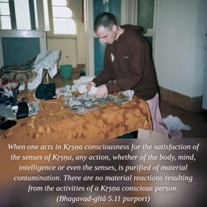

The yogīs, abandoning attachment, act with body, mind, intelligence and even with the senses, only for the purpose of purification.

When one acts in Kṛṣṇa consciousness for the satisfaction of the senses of Kṛṣṇa, any action, whether of the body, mind, intelligence or even the senses, is purified of material contamination. There are no material reactions resulting from the activities of a Kṛṣṇa conscious person. Therefore purified activities, which are generally called sad-ācāra, can be easily performed by acting in Kṛṣṇa consciousness. Śrī Rūpa Gosvāmī in his Bhakti-rasāmṛta-sindhu (1.2.187) describes this as follows:
īhā yasya harer dāsye
karmaṇā manasā girā
nikhilāsv apy avasthāsu
jīvan-muktaḥ sa ucyate
“A person acting in Kṛṣṇa consciousness (or, in other words, in the service of Kṛṣṇa) with his body, mind, intelligence and words is a liberated person even within the material world, although he may be engaged in many so-called material activities.” He has no false ego, for he does not believe that he is this material body, or that he possesses the body. He knows that he is not this body and that this body does not belong to him. He himself belongs to Kṛṣṇa, and the body too belongs to Kṛṣṇa. When he applies everything produced of the body, mind, intelligence, words, life, wealth, etc. – whatever he may have within his possession – to Kṛṣṇa’s service, he is at once dovetailed with Kṛṣṇa. He is one with Kṛṣṇa and is devoid of the false ego that leads one to believe that he is the body, etc. This is the perfect stage of Kṛṣṇa consciousness.